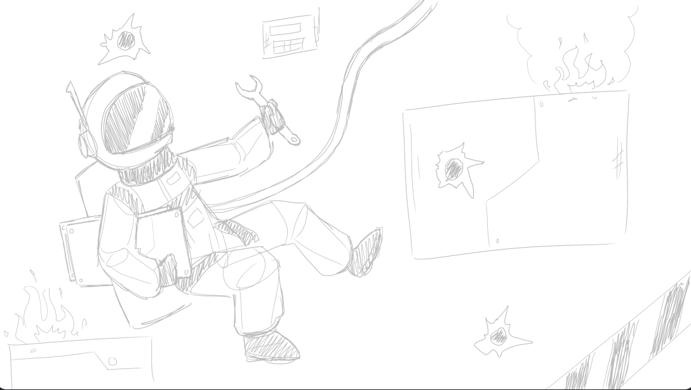

Week 1 — Project Concept & Vision
This week, our team focused on establishing a clear concept and vision for our game, AstrOh-No! We aimed to define the core gameplay mechanics, art style, and overall narrative direction.
What We Worked On
We had settled on a game concept in lab time, which made it simpler for our group to continue defining different aspects and gameplay features we’d like to have in our game.AstrOh-No! is a game set in a spaceship, flying through an asteroid belt, where the player repairs ship damages while defending themselves from potentially dangerous alien invaders. This beginning idea allows us to build on it, ideating parts like how interactions work, gameplay features, storylines, and aesthetics.
Our team also decided to create the game in a 2D pixel art style, given that the style would work well with our team's visual artist. Here is an initial game art sketch by Jordan: 
In other news, this week our team has worked on our game proposal and its presentation slides, as well as creating this blog website and our personal blog websites.
Our agenda for next week includes continuing to iron out gameplay and story decisions, where after we decide on how the game will work and look like. After this, we can begin working on assets, to where we can begin initial work in Unity, our chosen game engine, and start putting our game together!
← Back to Weekly Blogs